Chen
北航头马的"大忽悠"与幕后操盘手——一个用幽默把人忽悠进门、又用笔杆把俱乐部记录下来的公关副主席。
干部活跃 2018–2019出现 18 次 · 18 篇2 场演讲
Chen（吴政辰）是北航Toastmasters最活跃的幕后力量之一。从能查到的记录看，他几乎包揽了俱乐部那段时期的编辑、文案与海报工作——一篇又一篇会议预告、纪要和回顾，落款处反复出现"编辑|Chen""文案|Chen""海报|Chen"，他用自己的笔，为俱乐部留下了从第223次到246次会议的连续记忆。
在台上，他是出了名的"幽默Chen""大忽悠Chen"。无论是中文会议里教大家治理浏览器广告的实用分享，还是把干货讲得满堂欢笑的演讲，他总能让会议气氛活络起来；在联合中文会议中他还担纲"搞笑官"，专职活跃现场。会员们半开玩笑地说，许多大佬都是被他"忽悠"来参加会议的——"不远千里来相会，北航头马一线牵"。
他先是以会员副主席的身份招新揽客，对外联络全靠他的一句"添加会员副主席Chen微信加入我们"；在2018年底的官员竞选会议上，他正式当选公关副主席，继续扛起俱乐部对外形象与传播的担子。
无论台前台后，Chen都是那种"把活儿默默干完还顺手逗你一乐"的人。他写的推送里既有鲁迅式的调侃，也有对每位角色、每位获奖者的认真记录——热忱、风趣，是这个英文演讲俱乐部里不可或缺的黏合剂。
里程碑
- 2018-12 当选公关副主席 ↗在校内雕刻时光咖啡厅的官员竞选会议上当选公关副主席，进入俱乐部服务团队。
- 2019-04-28 中文会议实用分享 ↗第242期中文会议上做浏览器广告净化与使用技巧分享，颇受欢迎。
- 2019-10 以会员副主席身份招新 ↗在Open Day招新推送中作为对外联络人，邀请新朋友加入俱乐部。
做过的演讲 · 2 场
在Marathon马拉松多人演讲会议上做了一场既有满满干货又逗得大家欢笑的演讲。
在第242期中文会议上，Chen为大家分享如何解决浏览器花式广告、网页杂乱、视频下载等困扰，给出实用使用细节。
担任过的会议角色
编辑/文案/海报×15搞笑官(Jokemaster)
为俱乐部做的事
- 长期担任俱乐部推送的编辑、文案与海报设计，连续记录第223次至246次会议的预告、纪要与回顾
- 当选并担任公关副主席，负责俱乐部对外形象与传播
- 曾任会员副主席，作为对外联络人招揽新会员、主持Open Day招新
- 在联合中文会议中担任搞笑官，活跃现场气氛
- 以幽默风格做演讲与分享(浏览器使用技巧、马拉松会议干货演讲)
- 撰写带有鲁迅式调侃风格的会议回顾，认真记录每位角色与获奖者
照片墙 · 时间线
共 30 帧，其中 9 帧已用人脸识别确认是本人（带 ✓）。
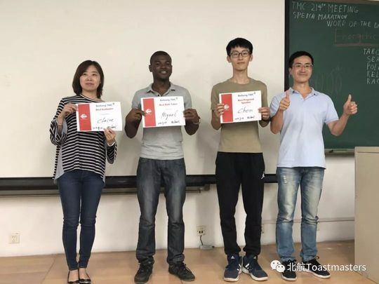
✓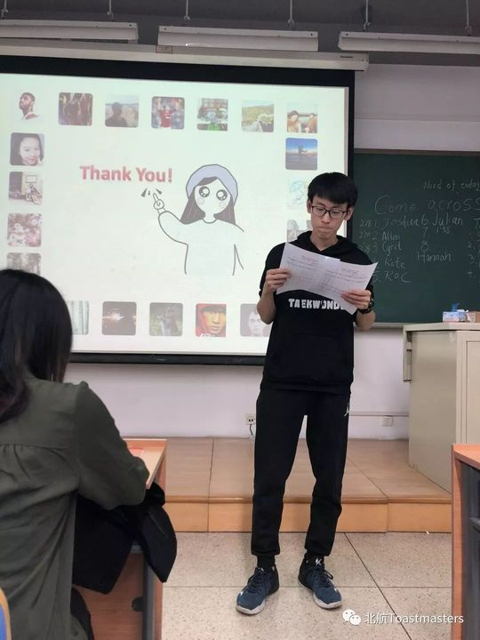
✓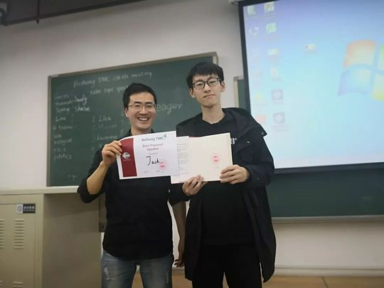
✓ ✓
✓ ✓
✓ ✓
✓ ✓
✓ ✓
✓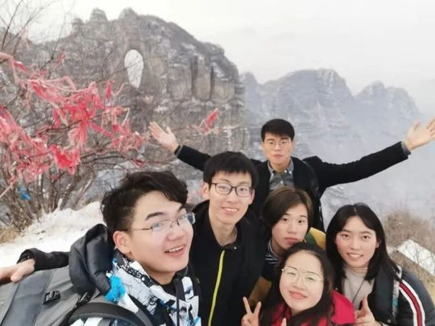
✓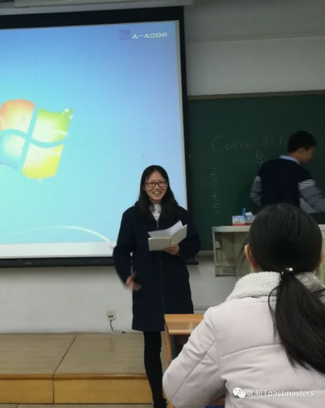


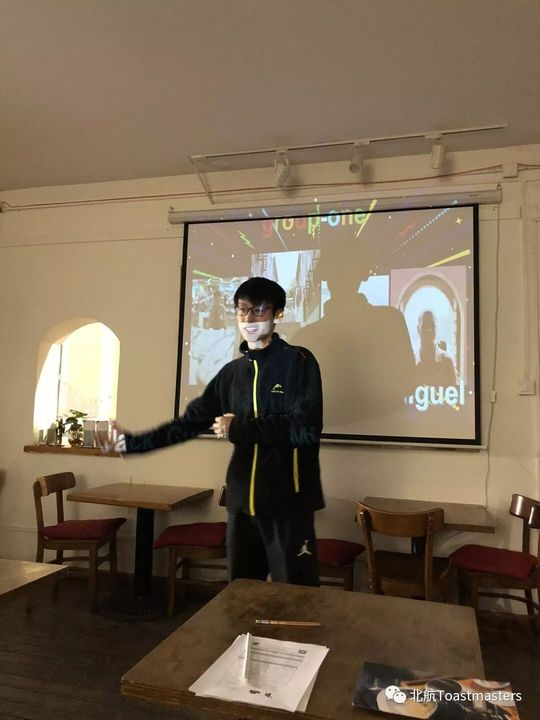


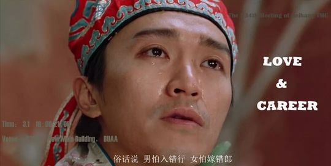
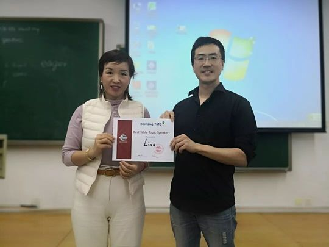
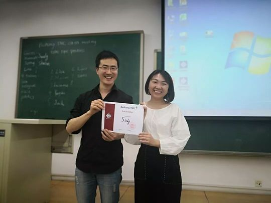

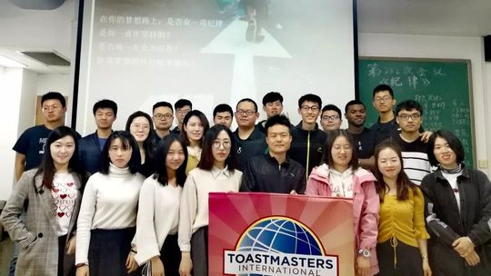

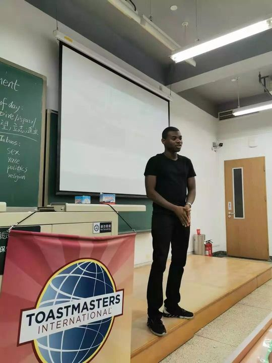


完整足迹 · 18 次出现（点开，每条可跳转原文）
- 2018-12-04第223次 · 编辑223次会议《Thanksgiving》预告
- 2018-12-08编辑会议回顾与流程介绍推送
- 2018-12-23当选公关副主席(吴政辰),并负责编辑文案
- 2018-12-27撰写文案并编辑推送
- 2018-12-30被称为主席,回南京期间小编代为编辑推送
- 2019-01-05撰写228次会议回顾文案
- 2019-01-09第227次 · 为227次会议做编辑与海报
- 2019-01-16第230次 · 为230次演讲马拉松预告做海报、编辑与文案
- 2019-01-20第230次 · 在马拉松会议带来幽默且干货满满的演讲
- 2019-01-22为联合中文会议制作海报、文案与编辑
- 2019-03-02负责第234次会议回顾图片
- 2019-03-10参与第235次会议回顾图片
- 2019-03-17组织比赛并邀请嘉宾到场
- 2019-03-21第237次 · 负责第237次会议预告编辑、海报与文案
- 2019-03-23会议“遗憾”的回顾
- 2019-04-28第242次 · 第242期特别中文：听说这期会议有笑又有料，那我先听为敬！
- 2019-05-23第246次 · 第246次头马会议《Smile》&大咖分享
- 2019-10-15招新｜北航头马俱乐部Open Day
“不远千里来相会，北航头马一线牵！”